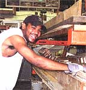
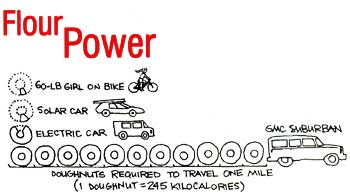

Turn Over A New Leaf
Introduce yourself to tree-free paper and take advantage of its benefits - environmental and otherwise; Web site offers resource to teach children about energy consumption; saving building costs with reclaimed materials.
By the Mother Earth News editors
October/November 2002
Push Your Pencil on Tree-Free Paper
Nearly half the trees cut in North America feed our paper frenzy, and the pulp and paper industries continue to rely on virgin wood for almost 70 percent of their total fiber supply, while non-wood-fibers represent less than 1 percent of total feedstock inputs.
A Mammoth Mountain of Memos Every 12 months, a single office employee can stack up to a 4-foot-high column of 10,000 sheets of used paper. Photocopying consumes an average of 27 pounds of paper per person, per year.
A rash of reports, juggernauts of junk mail: They all add up to piles of paper routed to the recycling bin or, worse, to the wastebasket. Despite the computer-age promise of a paper-free world, each American uses 700 pounds of paper every year, on average, and that amount is growing rapidly. By 2010, a 50 percent increase in paper consumption is expected worldwide.
Constant overlogging has left less than 5 percent of the nation's virgin forests standing, according to Fiber Futures, a nonprofit environmental advocacy and consulting group. Despite projected shortages, wood fiber continues to be the No. 1 raw ingredient for paper production.
So what's a tree-hugger to do?
You can seek out tree-free alternatives. Paper made from the following materials not only decreases the pressure on our forests, but reduces the amount of chemicals and energy required to make paper, and expands the market for available fibers that are otherwise underutilized.
A member of the hibiscus family (Hibiscus cannabinus), kenaf (pronounced kuh-naf) is related to cotton and okra, and grows well in many regions of the United States. (Kenaf's delicate, creamy yellow flower is pictured above.) United States Department of Agriculture studies show that kenaf produces 6 to 10 tons of dry fiber per acre per year, a yield three to five times greater than the yield from Southern pine trees. Southern pine trees can take years to reach harvestable size, while kenaf reaches a mature height of 12 to 18 feet over its five month growing season. Fewer chemicals and less energy are required to prepare the plant for papermaking. (For example, Vision Paper's kenaf paper is totally chlorine free.) The more lignin (a polymer related to cellulose) a plant has, the more chlorine required to soften the fibers. Chlorine also is used to whiten the fibers. Its use in the papermaking industry has long been fraught with controversy, due to the fact that chlorine use produces dioxins, which are proven carcinogens.
Hemp, a notorious weed in the United States, doesn't deserve its bad buzz. While closely related to marijuana (both are varieties of the same species, Cannabis sativa), industrial hemp contains less than 1 percent of the psychoactive chemical delta-9tetrahydrocannabinol (THC) that gives marijuana its potency. From 1776 until its ban in 1937, hemp was a major American crop; Presidents Washington and Jefferson grew hemp and praised its merits. Today, hemp is grown in Canada, Russia, China and many eastern European countries. Like kenaf, hemp has a higher yield per acre than that of trees.
Bagasse, the crushed outer stalk that remains once the juice has been squeezed from sugarcane, also is used as a paper fiber. Along with cereal straw and bamboo, it is among the world's most widely used and available non-wood fibers. Its annual tonnage nearly equals the combined total production of corn and wheat, the most commonly cultivated grain crops.
In the United States, an estimated 150 million tons of straw goes unused each year. But its economy and high production per acre could make it a good candidate for papermaking. Straw also requires far fewer chemicals and less energy to produce paper pulp, due to the low amount of lignin in its residue. Straw's drawback is that it contains silica, which can calcify and plug up papermaking equipment.
-Catherine Hallier
Building Revival
Homeowners, homebuilders and handypeople across the country are gaining their salvation-or at least their salvage one board, one bathtub, one door at a time.
Used building material centers are popping up all over the United States, and whether the intent is to save money or save the planet, people are flocking to these warehouses to find used and surplus doors, windows, flooring, lumber, fixtures, bathtubs-everything, including the kitchen sink!
Materials are harvested from old houses and office buildings. Once reduced to a heap of rubble that was trucked to the local landfill, these buildings now are being carefully deconstructed, and the materials reincarnated for a second go-around.
"About 85 percent of the material from deconstructed houses can be reused or recycled," says Jim Primdahl, director of the Portland, Oregon-based DeConstruction Services.
At the Kansas City, Kansas, ReStore, reclaimed paint goes for $3 a gallon. Solid wood doors can be found for $10 at the ReBuilding Center in Portland, Oregon. Most materials are priced at least half of what they'd fetch in do-it-yourself stores.
Find a warehouse in your neighborhood on the Used Building Materials Association's Web site at bcn.boulder.co.us/environment/ ubma/index.html or Habitat's ReStore Web site at www.habitat.org/env/restoreusa.html.
Energy Literacy: it's Elementary

Your children have heard that they should eat their Wheaties to fuel their busy bodies, but do they know how much energy their bus used to deliver them to the school's steps, or even where that energy originated? Funded solely with oil overcharge funds from an Exxon settlement, the Texas State Energy Conservation Office has developed the Renewable Energy Demonstration Program (REDP), one of a handful of organizations promoting renewable energy literacy. REDP offers more than 20 lesson plans, from examining the energy savings of electric cars to calculating the biomass fuel potential of a peanut, for children of all ages. These hands-on exercises, which are grouped into three age levels, are easy to understand, fun and free. You can download the lesson plans at REDP's Web site, www.infinitepower.org, or request them by calling (800) 5315441, extension 31796.
REDP's Web site also offers fact sheets on renewable energy options like solar-electric, geothermal and wind energy, and adults and children can tally their own global pollution scorecard and measure their effects on global warming with the electric power and carbon pollution calculators.
Our energy amnesia is just one of the consequences of our plug-and-play society. When electricity is delivered to us with a flick of a switch, it's easy to forget how it actually got there. Dwindling supplies of nonrenewable fossil fuels (experts estimate worldwide oil and gas reserves lasting only another 50 years) will force the next generation to tap into other options, such as solar, wind and biomass, to feed their energy needs.
Energy consumption is easy to understand when it's couched in doughnut dogma. The Renewable Energy Demonstration Program's Solar and Electric Cars lesson plan shows that the girl on the bike only needs to eat one-tenth of a doughnut to travel one mile; a gluttonous sport utility vehicle requires more than 100 times that amount to go the same short distance.
Green Gazette is written and designed by Claire Anderson, except where noted.
What's Up, Doc? Cambridge University scientists found that 8-year-old children are better at recognizing cartoon characters than real, wild animals. Kids could identify only one out of every two local species shown, but correctly named 80 percent of Pokemon characters.
|
 |
|
 |